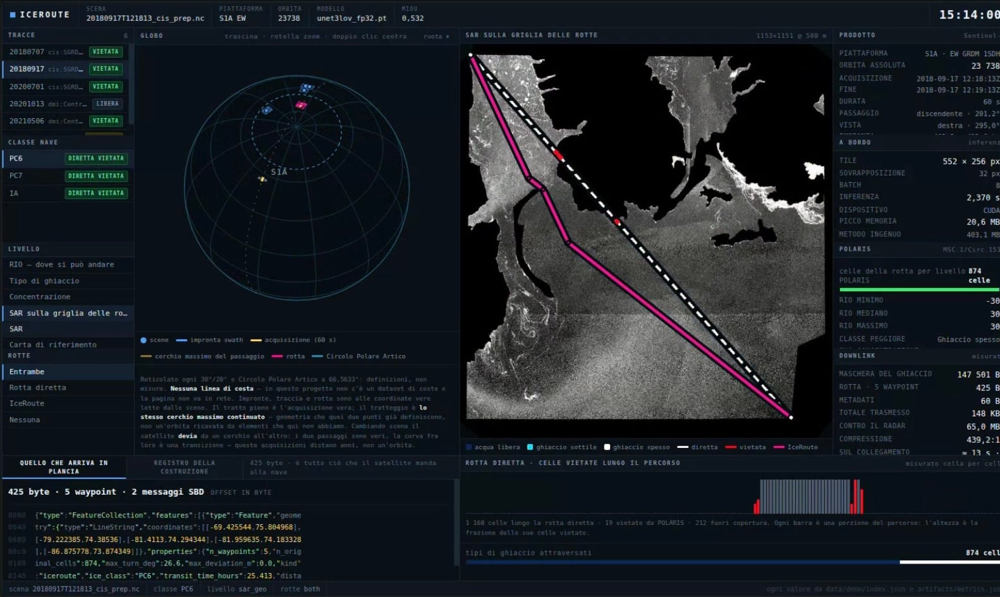
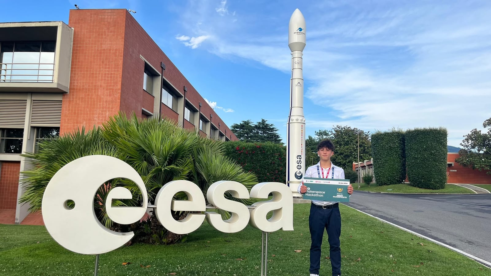
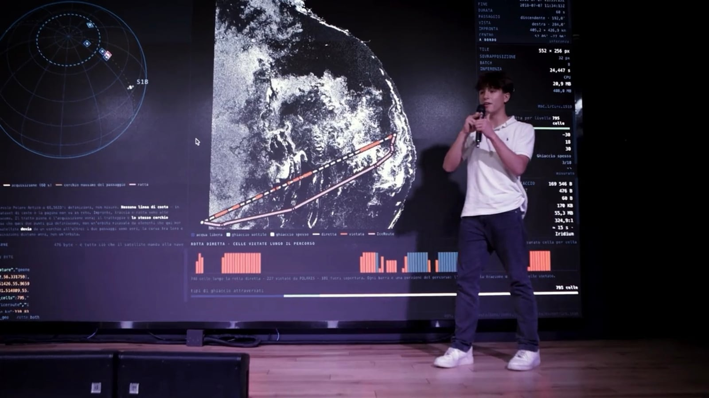

IceRoute
Sea ice segmentation onboard the satellite.
Segmentazione del ghiaccio marino a bordo del satellite.
Polar charts reach a ship's bridge 12 to 24 hours late, and by then the ice has moved. In IceRoute an INT8 quantized U-Net runs on Sentinel-1 C-band SAR imagery inside a GPU@SAT FPGA, produces the ice mask, computes the optimal Arctic route within POLARIS operational limits, and downlinks mask and route instead of the raw scene.
Le carte polari arrivano in plancia con 12-24 ore di ritardo, e nel frattempo il ghiaccio si è mosso. In IceRoute una U-Net quantizzata INT8 gira sulle immagini SAR in banda C di Sentinel-1 dentro un FPGA GPU@SAT, produce la maschera del ghiaccio, calcola la rotta artica ottimale entro i limiti operativi POLARIS e manda a terra maschera e rotta invece della scena grezza.
1° EO Makerspace Hackathon 2026, ESA Φ-lab
- Onboard data reductionRiduzione dei dati a bordo
- 200 : 1
- Transmitted packetPacchetto trasmesso
- < 4 KB
- Ice classesClassi di ghiaccio
- 5
- AltitudeQuota
- 550 km
- PlatformPiattaforma
- 12U CubeSat, Zynq UltraScale+


